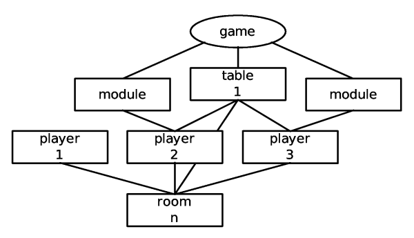
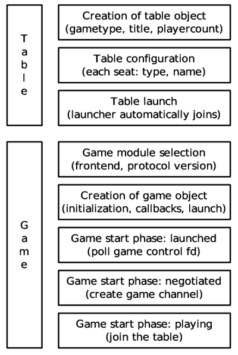

GGZ Gaming Zone Core Clients
Revision: 0.1Date: 10.03.2005
Author: Josef Spillner <josef at ggzgamingzone dot org>
Core clients enable players to log into GGZ servers, chat, select a game, view the network lag and handle numerous smaller task. Hence, they are an essential part of GGZ and their internals should be well understood.
The programmes themselves
Basically, each core client starts out as a chat client. It offers connection profiles for each server. The server list can be maintained by hand or updated via the GGZ metaserver. Connection options include the type of login (as a guest, registered player or for the first time), the encryption, and of course the nickname.
After having logged in, the core client will enter the first room, called the Entry Room or Lounge. It doesn't have any games associated with it so only chatting is possible. Within each room, players can view their peers and their properties (whether they are guests, bots, regular players or admins). They also can start a private conversation, check their connection lag, and talk with the chatbot, for which a visual dialog might exist.
Entering a regular room opens the possibility of launching a table, with a predefined number of open and reserved seats and AI players. Existing tables can also be joined, either as player or as spectator. Then, directly linked to the join is the launch of the local game module which will then communicate with the game server. Core clients still handle tasks like transmitting the player list, highscores and so on.
A building block: ggzcore
The ggzcore library has been written to support the development of core clients. It is currently used in the standard clients (like KGGZ, ggz-gtk, ggz-gnome, ggz-txt and VÃbora), as well as in grubby the chatbot, the telnet wrapper, and the command line tool ggz-wrapper which is used by the instant messenger plugins for Gaim and Kopete. Wrappers exist for C++ (called GGZCore++) and Python (called PyGGZCoreSimple).
The way ggzcore works is that it maps the entities to object-orientated structures and functions. Thus, after initializing the library with ggzcore_init, the first action will always be to initialize a server "object" by calling ggzcore_server_new. Afterwards, some variables may be set, like the hostname, but before actually connecting, callbacks must be set up because ggzcore works callback-based all the way. This can be done with ggzcore_server_add_event_hook. Examples of such hooks are GGZ_CONNECTED, when the connection is first established, or GGZ_LOGIN_FAIL, if the subsequent login did not succeed.

As can bee seen in the picture, the server hosts a lot of room. The room list can be fetched by calling ggzcore_server_list_rooms, for which the event GGZ_ROOM_LIST will asynchronously be generated later on. The client can then change the room, this is what ggzcore_server_join_room is for.
In order to prepare gaming, the gametype associated to each room must be known also. As for the room list, the list of gametypes will arrive upon calling ggzcore_server_list_gametypes. Usually, this is even performed before joining any room, but to speed up things it could also be done afterwards in the background.
Just like a GGZServer object represents the server, the room the player has joined is accessible via a GGZRoom object, which can always conveniently be retrieved as the result of the function ggzcore_server_get_cur_room.
Chatting
After entering a room, the players will likely see a visual list of players, passed to the client by ggzcore_room_get_nth_player. A message can be sent to all of them by calling ggzcore_room_chat with a chat type of GGZ_CHAT_NORMAL. Likewise, using GGZ_CHAT_BEEP and GGZ_CHAT_PERSONAL send a beep or a message to a selected player, respectively. Administrative broadcasts are possible with GGZ_CHAT_ANNOUNCE. However, in order to receive all the chat messages, the room hooks must be set up just like the server hooks were, which is the task of ggzcore_room_add_event_hook.
It is also possible to chat with a subgroup of people who are playing on the same table. In order to get that far, a closer look at how games are launched must be done first.
Playing games
The gametype associated with each room must be supported by at least one game client, but there can also be multiple frontends for each game. The way a launch works, a GGZTable object is built first with ggzcore_table_new, and its seats are configured by the launching player, who is also known as game host, as opposed to the other players who will join later on.

The core client will then move the players to the table, and out of the list of players who are not on any table. During the game, it keeps the connection to the game client using several functions of the ggzcore library, so when a game requests statistics, for instance, it will relay this request to the main server (ggzd), read the statistics, and forward them to the game client again. This helps to keep the game protocols small, since all the common data exchanges can be done via GGZ. The same goes for game and team chat.
The launch in detail

The way from wanting to play a game to actually playing it is very complex. It consists of two parts, table launch and game launch, where the first part only applies to the first player, as all others can simply join the table.
It is important to know when to start reading data from the game module's control file descriptor and when to stop it again - at this time the game will already be set to the PLAYING state and the core client has mostly done its duty.